You administer an activity: an event, a section, or a committee. You open its periods, create its areas, build its team, and track its progress. The organization’s other activities and their people stay invisible to you.
This user guide covers only the “Manage the activity” and “Manage the organization” groups of the menu. The screens shared by everyone (My space, Timeline, Sheets, Preferences) are described in the coordinator user guide.
Starting point
Where your screens are
The Manage the activity group appears in the left menu when you administer the activity on display. It is followed by the Manage the organization group, which holds only the “Activities” entry for you. The web addresses of these screens start with the activity ID, for example /rencontres/admin/equipe.
The label of the periods follows the kind of activity: Editions for an event, Seasons for a section, Terms for a committee. The examples below use “edition”.
The tables on these screens work the same way. A column you can sort has two arrows in its header: clicking the header sorts the table. A column you can filter or search has a funnel or magnifier icon. The other columns, such as “Actions”, have neither sorting nor filtering. You adjust a column’s width by dragging its right edge, and a double-click restores the automatic width. Your browser remembers these widths. Clicking a row of the People, Editions, and Activities tables opens its window, like the pencil at the start of the row.
Your screens
What you do, screen by screen
Admin notifications
/<activity>/admin/notifications
This screen gathers the news about your admin role, separate from the bell. It sorts the news by activity, then by area. Each group shows its count of unread notifications, and a group with no news opens collapsed. The menu entry shows the same count.
Join requests and invitationsA request is waiting for your review, another admin handled one, or a person accepted an invitation. A declined or expired invitation triggers no notification.
TeamAnother admin of the activity appoints or removes a person, or makes them an admin. A person states an interest in “All areas”.
Read allMark the notifications of one group as read: an activity or a single area.
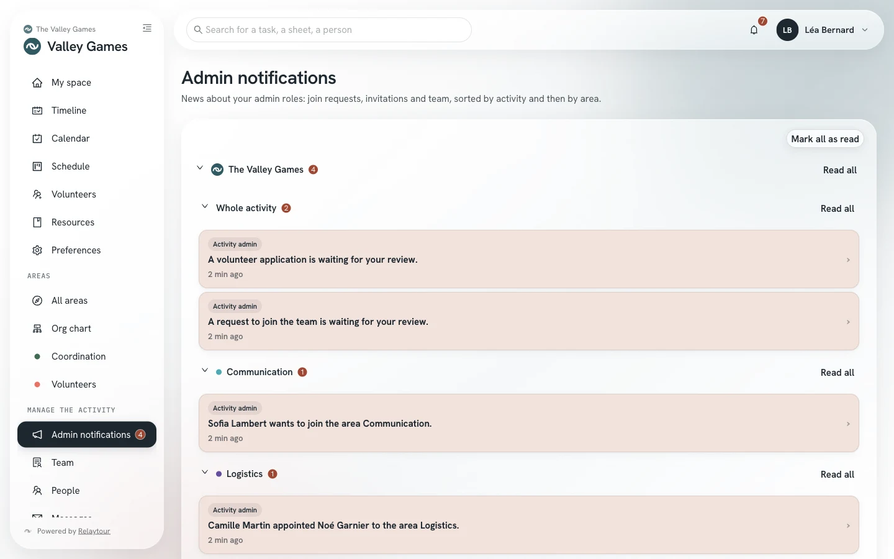
Admin notifications, on the sample organization. The people are fictional.
An action never notifies you about something you did yourself. Your preferences control this news in the “Your admin roles” section: its display, its place in the email summary, and its push notification.
Team
/<activity>/admin/equipe
The screen shows one card per area, for the selected period. It has two views: Team to build the team, and Progress to track tasks. Both views share the period, the filters, the search, and the sort. The page address keeps these settings, so you find them again when you come back from an area’s page.
GroupKeep only the areas of one group of the activity, for example the sports or the departments.
SearchFind an area by its name, or by the name of an appointed person.
SortOrder the cards: open seats first, activity order, name, overdue tasks first, or least progress first.
Open an areaClick the name of a card to open the area’s page. The “Manage the team” button on that page brings you back to its card.
The Team view shows the target headcount, the appointed people, and the interests of each area, then a reminder of its progress. Areas that lack coordinators appear first when the page loads. The cards then keep their position while you make changes. The “Open seats” filter keeps only incomplete areas. Three counters sum up the situation: Open seats, Areas with no one, and Pending interests.
Target headcountSet the number of people expected on an area. The difference with the appointments gives the open seats.
AppointAppoint a person who stated an interest, or pick another person of your team from the list. A person missing from the list is invited from the “People” screen.
Main contactClick the star of an appointed person to make them the main contact of the area. An area has only one per period. This role grants no extra rights.
RemoveRemove an appointment, or remove an interest that no longer applies.
Copy volunteer callCopy a call to the coordinators, to paste into an email or a message.
Message the teamPrepare a message for the whole team of the activity. The send icon of a card prepares a message for the coordinators of that area. The “Messages” section describes what happens next.
On an archived period, the target headcount, the main contact, and the removal of interests are disabled.
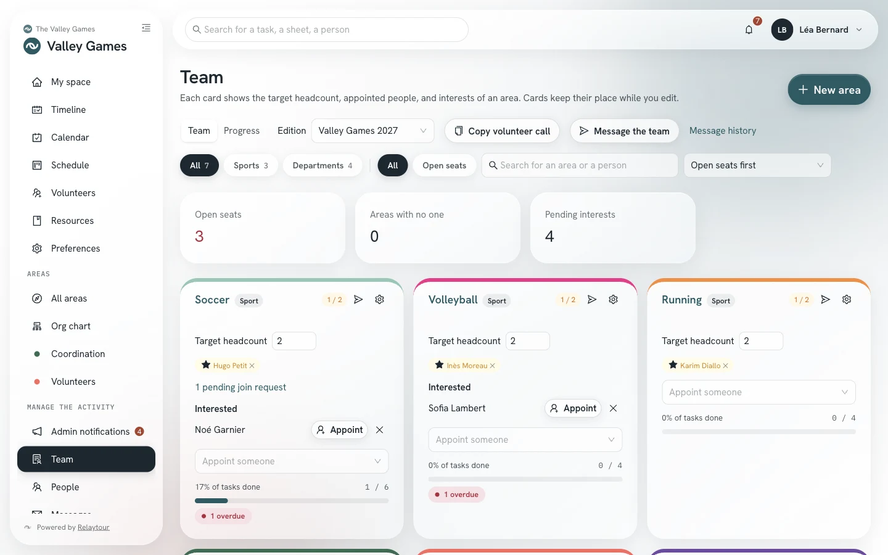
Team screen, on the sample organization. The people are fictional.
The Progress view shows the done, overdue, and unassigned tasks of each area, with its appointed people and its target headcount. Four counters sum up the selected period: Done tasks, Overdue, No one, and Areas. The “Overdue tasks” and “Unassigned tasks” filters keep only the areas concerned. The icon of a card brings you back to the “Team” view, on that area.
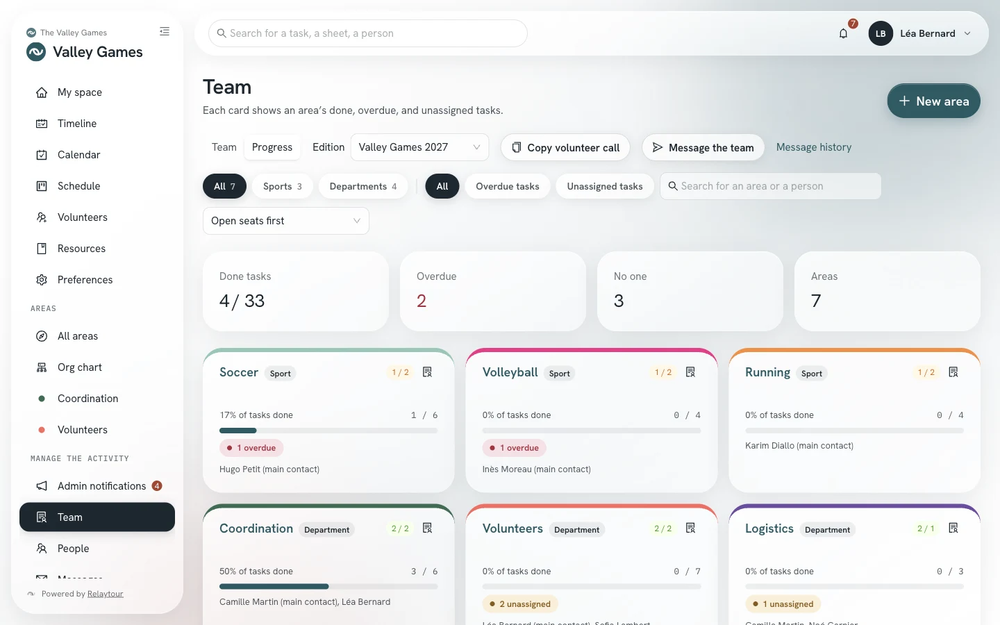
Progress view of the Team screen, on the sample organization. The people and the areas are fictional.
On an area’s page, a shared task shows you more than it shows other people. Its detail tells, for each area, who proposed, accepted, or declined the task, and when.
Derive in other areasAdd a task to other areas without waiting for their approval. A coordinator can only propose it.
Add without approvalAdd to an area a task it has not accepted yet, or that it has declined. The history keeps this action, with your name.
A task template from the content folder can be shared too, with the declinaison key. The import then adds the task to each area, without asking for approval.
The same screen sets up the areas. An area is a part of the activity, filed in a group. It stays the same from one period to the next, which lets the history follow it.
New areaEnter the name, the ID, the group, the description, the color, and the display order. The description introduces the area in one or two sentences.
Set upOpen an area’s settings from the gear on its card, to edit or archive it. An archived area leaves the cards, and its history stays available to read.
Archived areasExpand this list, at the bottom of the screen, to set up an archived area or unarchive it.
The ID no longer changes after creation: it links the sheets, the task templates, and the history.
If an area changed while you were editing its settings, a window offers “Reload” or “Overwrite”. The coordinator user guide describes these windows in “Working together”.
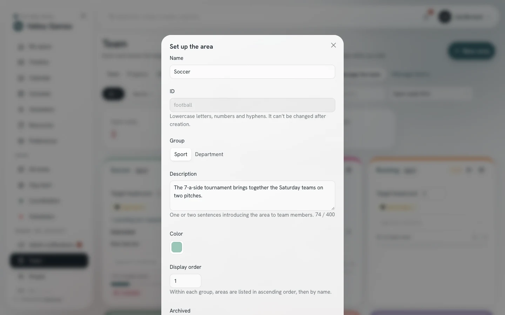
Settings of an area, on the sample organization.
People
/<activity>/admin/personnes
Only the people invited here can sign in to the organizer workspace. The screen has two tabs. “Activity team” gives the name, the email address, the appointments, the interests, and the role of each person of the activity. “Join requests” holds the queue of people proposed to join the team.
In the first tab, filters separate admins from members, isolate one area, or keep only the people with no appointment for the selected period. A field searches for a name or an address.
Invite a personEnter the name and the address. The person joins the team of your activity, with or without an appointed or wished-for area. Without an area, they discover the areas of the activity. The same window can make them an admin of the activity. A person without an account receives an email with their sign-in link and the user guide for their role. A person who already has an account in the organization joins your team without a new email, and keeps their account name. An address that already has an account outside your organization receives an invitation: the person accepts or declines it from their account, and nothing is created in their name before they approve.
Edit the accountOpen the window of an account with the pencil on its row, or by clicking the row. There you set the person’s appointed areas and wished-for areas, and their role as activity admin.
Resend the invitationFollow up with a person of your team who has not signed in yet.
Remove from the activityTake a person with no appointment for the selected period off the team of the activity. Their interests for the current periods are removed, and their account stays in the organization. First remove their appointments from the other current periods and their role as activity admin.
Pending invitationsA box lists the invitations awaiting approval, with the name and address you entered and the proposed areas. You resend an invitation once an hour, or you withdraw it. An invitation expires after 30 days. The person appears in the team only after approving; a declined invitation and an expired invitation look the same.
MessagePrepare a message for one person. “Message the selection” prepares a message for the checked people.
Your team gathers the people affiliated with, appointed to, interested in, or admins of your activity. A person affiliated without an area has the “No area” role. Each appointment also affiliates the person with the activity. You do not read the other members of the organization: only its admins read the full directory. The appointments and interests you see are those of your activities only. An organization admin edits the name of an existing account.
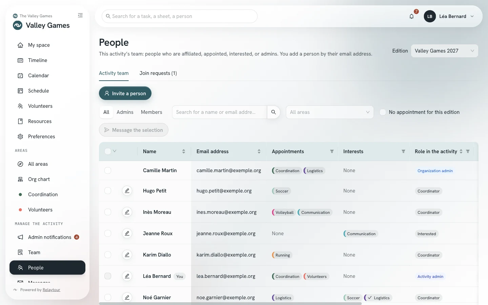
People screen, on the sample organization. The people and the addresses are fictional.
In the window of an account, an appointment makes the person a coordinator of the area: they edit its tasks, and an email announces their appointment. An interest only records interest. It grants no access, and only admins see it.
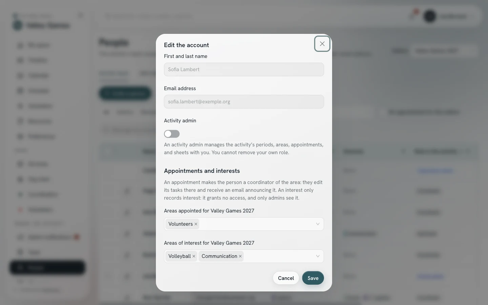
Window of an account, on the sample organization. The person is fictional.
A coordinator proposes a person for their area, or a person fills in the activity’s public form. The request arrives in the “Join requests” tab, with the address, the requested areas, and the note of the person proposing or the answers to the form. No account exists before your decision. The bell notifies you at most once a day, and each card of the “Team” screen counts its pending requests. An email also notifies you, at most once an hour: it gives the number of pending requests, without names. You turn it off in your preferences.
AcceptBring the person into your team and choose their areas. A requested area that you do not appoint becomes an interest. A request can also be accepted without an area: the person joins the team and discovers the areas. A person without an account receives their invitation by email.
DeclineDismiss the request. No account is created and no email is sent.
A person who is already a member of the organization shows the “Already a member” label: accepting their request appoints them without creating an account. The requests of an archived period can no longer be handled.
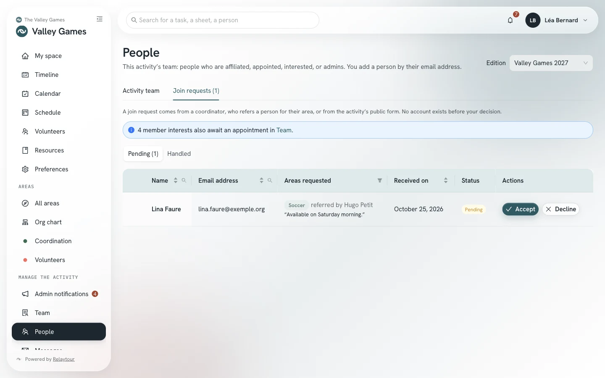
Join requests tab, on the sample organization. The people and the addresses are fictional.
Messages to your team
/<activity>/admin/messages
You prepare a message in Relaytour, then send it from your own mail app. Relaytour sends nothing: it composes the text, opens your mail app, and keeps what you prepared. The message goes out from your address, and replies come back to you.
TemplateStart from a free message or from a prepared text: period launch, reminder of overdue tasks, volunteer call, thank-you, among others. Relaytour fills in the name of the activity, the dates, and the tasks of the selected area.
Insert informationPlace a piece of information from the application in your text, at the cursor. A passage in square brackets remains to be completed, and the window points it out.
Cc or BccChoose between visible addresses (Cc) and hidden addresses (Bcc) for a message to several people. With Cc, each recipient sees the others’ addresses. With Bcc, you can keep the main contacts in visible copy.
Open in your mail appOpen your mail app with the recipients, the subject, and the text. Relaytour records the message at that moment.
Mail appChoose the mail app that opens for this message: your device’s, a webmail, or an app. Your preferences set the default choice. The “Choose your mail app” user guide describes each choice.
CopyCopy the addresses, the subject, or the text, to paste them yourself into your mail app. The “Address separator” choice places a comma or a semicolon between the addresses: Outlook expects a semicolon.
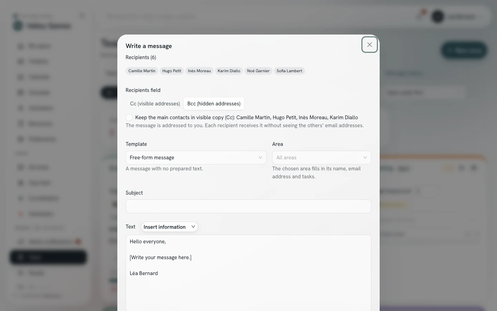
A message prepared for the whole team, on the sample organization. The people are fictional.
The “Messages” screen lists the messages of the activity: the date, the subject, the template, the author, the recipients, and the status. A message is “In progress” when the mail app opens. Its author then marks it “Sent” or “Canceled”, and can reopen it in their mail app. The “Message history” link on the “Team” screen leads to this screen.
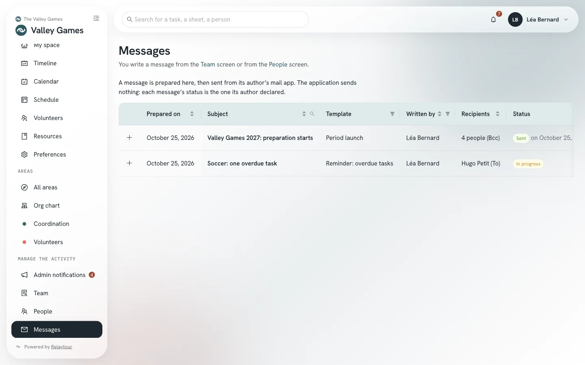
Messages screen, on the sample organization. The people and the messages are fictional.
The status of a message is the one its author declares: Relaytour does not know whether the message went out. A message has at most 500 recipients, and a prepared message can no longer be edited.
A very long text or a very large number of recipients exceeds what a link to the mail app can carry. The window then asks you to copy the text, or the addresses, and paste them into the message.
Ranking
/<activity>/admin/classement
The table ranks people by their contribution to the selected period. For each person, it gives their points, their completed tasks, the tasks completed on time, their tasks created, and their sheets created or edited.
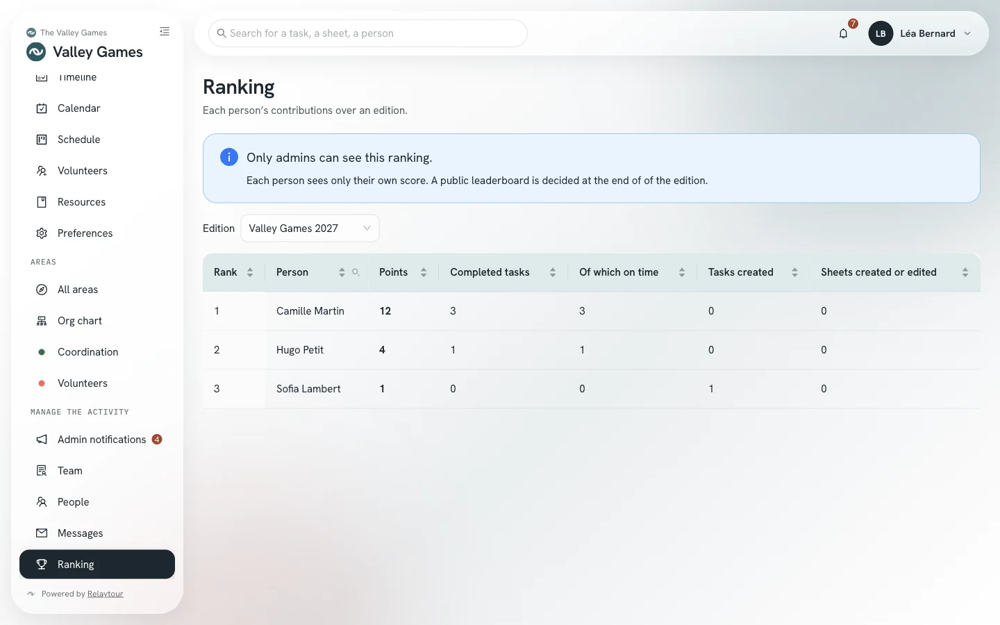
Ranking screen, on the sample organization. The people are fictional.
Only admins read this ranking. Each person sees their own score in “My space”, and no one else’s.
Sheet editing
/<activity>/admin/redaction
Admins edit all the sheets of their activity. Other people need an editing right, granted area by area.
GrantChoose a person and an area of your activity.
RemoveRemove a right that is no longer needed, after confirmation.
The right covering all sheets, shared ones included, belongs to organization admins.
A second table lists the admins. Their role already gives them sheet editing: the “Person” list does not offer them.
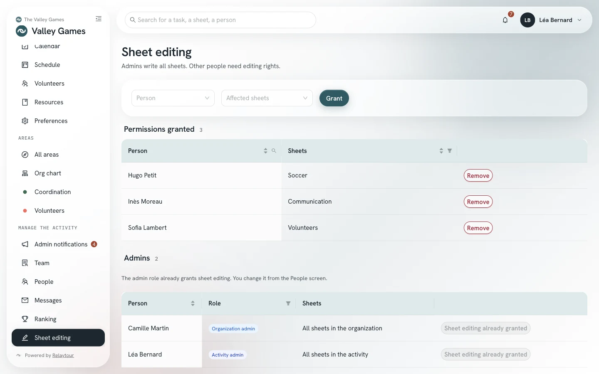
Sheet editing screen, on the sample organization.
Editions, seasons, or terms
/<activity>/admin/editions
A period is the reference point for all due dates: a task template at D-120 is dated from the first day. The table lists the year, the name, the dates, and the status, which is In preparation, In progress, or Archived.
New editionOpen the next period. You enter the year, the name, the first day, and the last day, then you choose its starting point: no tasks, the areas’ task templates, or the tasks of another period.
Add tasksApply the task templates to an open period, or carry over the tasks of another period into it. A window first shows what will be created.
SaveEdit the name, the dates, or the status of a period. The year no longer changes after creation.
To carry over tasks, you choose the source period and uncheck the tasks you do not keep. Abandoned tasks are unchecked in advance. Each due date keeps the same gap from the first day. A carried-over task starts again as to do, with no assignee and no comments. A shared task comes back with its derived tasks, except those that had been declined. Target headcounts are carried over, but appointments are not. A task already present in the period is never created a second time.
The key dates of a period are placed from the Calendar screen, in the right-hand column. A key date has a title, a day or a series of days, and an optional description. The whole team of the activity sees it in their calendar.
You also manage the activity’s global calendar: its meetings and date polls target the whole team or chosen people, across all areas. You write in each area’s calendar as well. A global meeting can link tasks from several areas, twenty at most.
AddPlace a key date in the calendar of the displayed period.
Create addressPublish the activity’s global calendar (phases, key dates, global meetings) at a secret address, which a shared calendar of the association subscribes to. Area meetings do not appear in it.
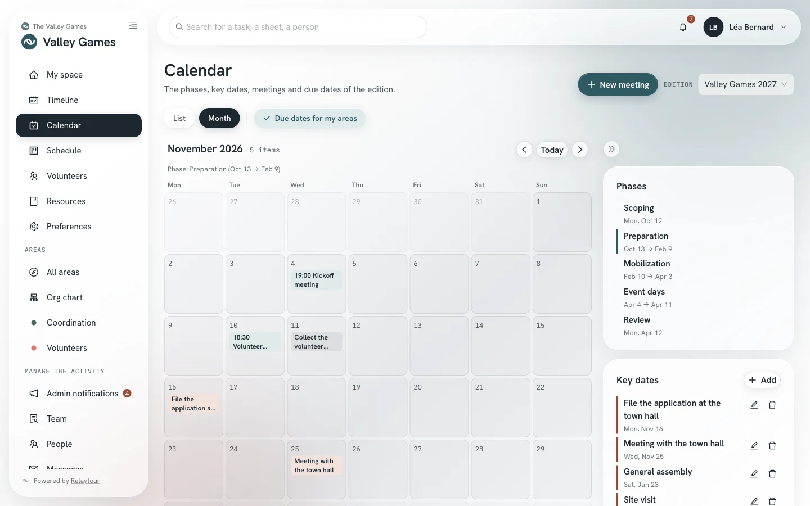
The calendar in Month view, as seen by an activity admin.
Archiving a period makes its tasks and its calendar read-only. Its join requests are deleted the following night, whatever their status. The accounts and the appointments stay.
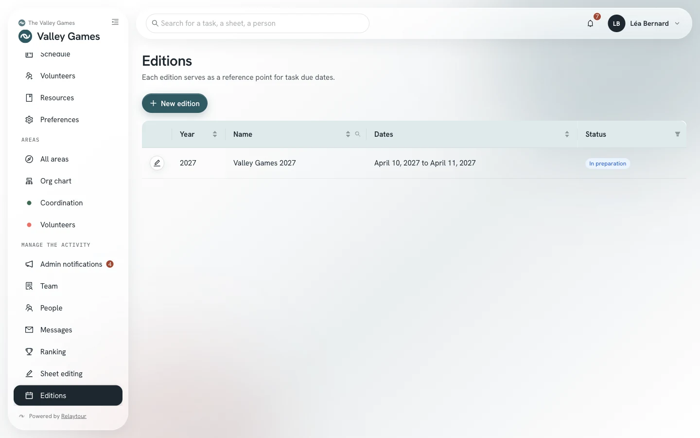
Editions screen, on the sample organization shipped with Relaytour.
Schedule and volunteers
/<activity>/programme
You manage the schedule of the whole activity. You create the shared slots, such as the welcome or the awards ceremony, and you write in the slots of each area. The coordinator user guide describes the screen and its views.
The venues are yours: a field, a room, a welcome desk. They carry over from one period to the next and form the columns of the grid, in the order you set.
VenuesAdd, rename, reorder, or archive a venue. An archived venue keeps its past slots and is no longer offered.
The Volunteers screen (/<activity>/benevoles) lists the people who help without an account. You read the contact details of each record. Activity admins are the only people who delete a record. A deleted record leaves the slots where it was placed.
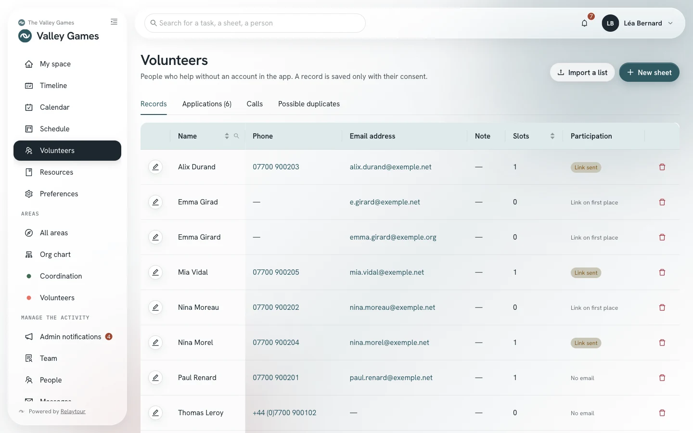
The volunteer records, as seen by an activity admin. The names and numbers are fictional.
You open volunteer calls of any scope: the whole period, one area, or a single slot. You read all applications, and you accept those for slots with no area.
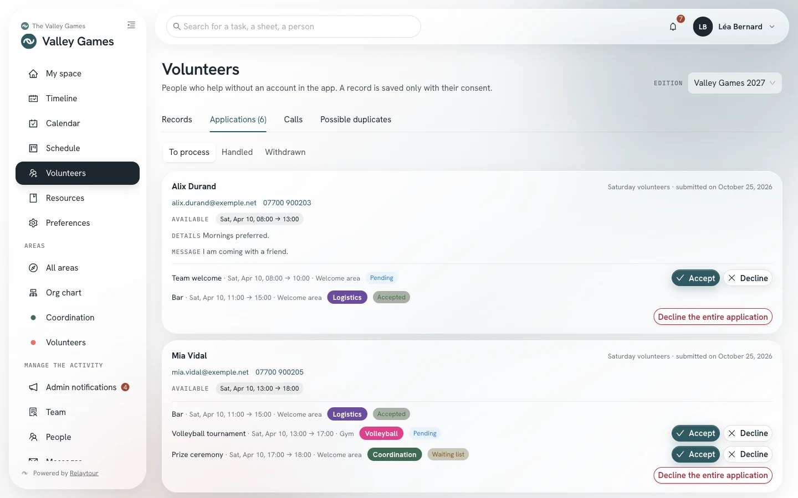
The queue of applications, as seen by an activity admin.
You import a volunteer list kept elsewhere for the whole schedule, with the “Import a list” button. The Possible duplicates tab, reserved for activity admins, matches the records of the same person and merges them.
A record exists only with the person’s consent. The server deletes the records unused for two years every night. The organization’s full export contains the records, the calls, and the applications. The Recruit and place volunteers user guide describes the calls, the list import, and the merge of duplicates step by step.
Sheet history
/<activity>/fiches/<sheet>
On each sheet of your activity, a History button opens the list of versions. There you view a past version and restore it if a change needs to be undone.
Coordinators who have an editing right edit the sheet, but do not see this history.
Activities
/<activity>/admin/activites
The table lists the activities you can see. The edit button appears only on those you administer.
SaveSet the name, the acronym, the order, and the kind of your activity.
Add a groupDeclare the groups of areas: sports and departments, teams and departments, committees and board.
Add a phaseSplit the period into phases: a label and a last day per phase, counted from the first day of the period (D-120, D+30). The last phase receives all the tasks that follow. Tasks are filed into phases by their due date. A task with no due date falls into no phase: it stays in a “No due date” group.
Own identityGive the activity its own contact, team page, logo, and two colors. An empty field takes the organization’s value.
Open to interestsLet the people of the team state their own interests in “All areas”. Otherwise, only activity admins record interests. This setting does not show the activity to members outside its team. Interests arrive in “Team”.
Addresses in the org chartChoose which personal addresses the org chart may display: none, those of admins and main contacts, or those of the whole team of the areas. Each address also requires the person’s consent, in their preferences. The activity’s contact always appears.
Creating and archiving an activity belong to organization admins.
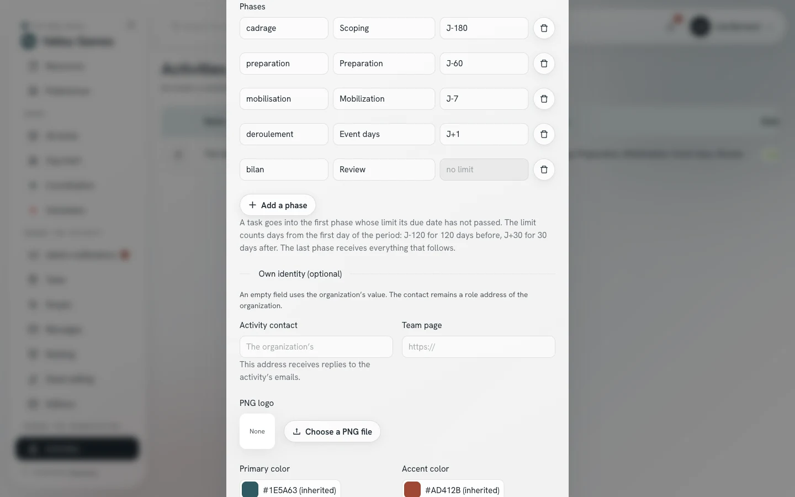
The phases of an activity, on the sample organization.
An activity you do not set up keeps four phases: Launch, Preparation, Final adjustments, Execution and review. Editing the phases changes no task: only the filing of dated tasks changes, in the timeline and in each area.
The same window sets up the activity’s public form. A person outside the organization fills it in, without an account, to join the team. Their request arrives in the “Join requests” tab of the “People” screen.
Form openOpen or close the form. The address to share appears under the switch. The form does not open without a contact for the activity or the organization.
IntroductionWrite the text that opens the form.
Follow-up questionAsk a question specific to your organization, for example “Your club”.
Availability levelsOffer up to eight levels, for example “A few hours during the event”.
The form is public: do not write any personal contact details in it. It presents the areas of the activity with their description. It states that it is used to join the team that prepares the activity. When a volunteer call is open for the whole period, the form shows its link for the people who come to help on the day itself. Otherwise, it gives the activity’s contact. To keep a period-wide call confidential, close it or close the public form. The person receives no email before your decision, and their answers are deleted when the period is archived.
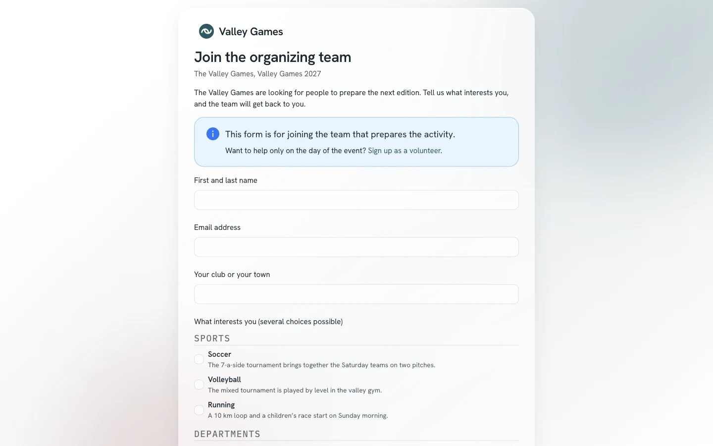
Public form of an activity, on the sample organization.
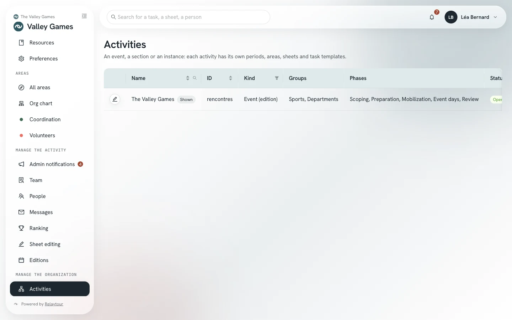
Activities screen, on the sample organization.
Good to know
The limits of your role
One activity at a time
An activity that you do not administer and where you are not appointed does not exist for you: not in the selector, not in the lists, not in the search. Neither do its people: you read and appoint your own team only.
You appoint admins of your activity only
On the “People” screen, the “Admins” filter gathers the organization’s admins and those of your activity. In the window of an account, you make a person of your team an admin of your activity, and you remove that role, except your own. You do not appoint organization admins, and you do not edit their appointments or their interests.
The accounts do not belong to you
Archiving and restoring a person is up to organization admins. Each person edits their own name in their preferences. An account is shared across the whole organization: a person you invite may already have one there, which you cannot read before they join your team. The organizations of one installation are kept separate: an account known elsewhere joins yours only with the person’s consent.
The organization’s identity is out of your reach
The name, the logo, the theme, and the content download of the organization are set on the Organization page, reserved for organization admins.
If the organization becomes read-only
A banner appears at the top of the workspace: you can view and export the data, but not edit it. The buttons stay visible, and any attempt to save returns this message.
The other roles
The other user guides
Your team uses the coordinator user guide. The organization’s board uses the organization admin guide.